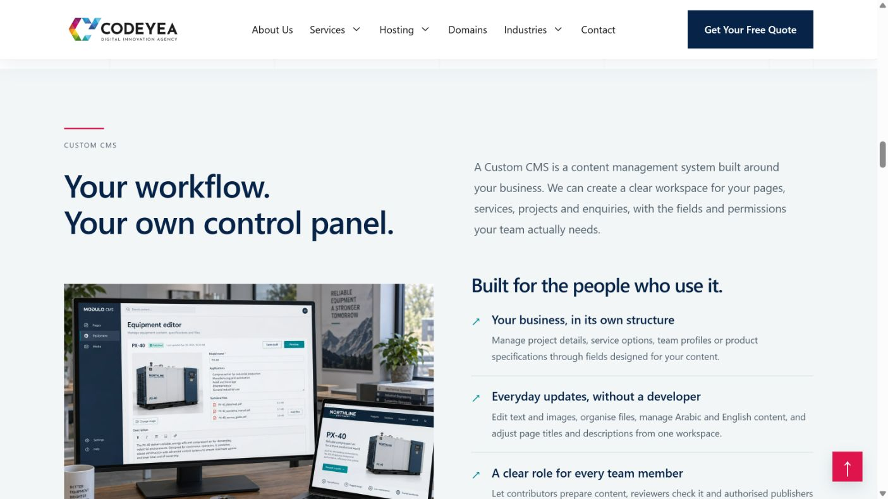
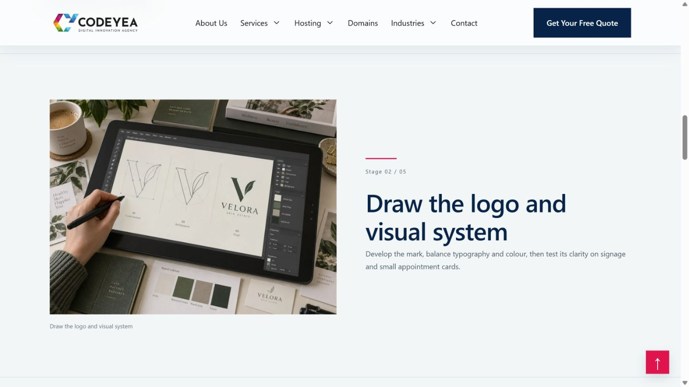

دراسات الحالة الست — مراجعة خاصة
36 صورة: غلاف وخمس مراحل لكل مشروع. متطلبات العميل ثم مراحل العمل ثم نتائج المحاكاة. الأسماء والمشاريع والأرقام افتراضية.
مقارنة مع تنسيق صفحة تصميم المواقع المعتمد
استُخدم تقسيم الصورة والنص ومقاس الصورة 4:3 والمسافة والحركات من سكشن Custom CMS. تغيّر المحتوى إلى مراحل الحالة؛ المثال التالي يوضح تطبيق التنسيق.

